最小
最大
平均値
標準偏差
標準誤差
1.45204
1.63609
1.56799
0.0183415
0.000226438
最小
最大
平均値
標準偏差
標準誤差
0.696388
1.63042
1.51598
0.109251
0.00134878
| オプション | 必須項目/選択項目 | 説明 | デフォルト |
|---|---|---|---|
| -i | 必須 | 入力ファイル設定 | NULL |
| -o | 必須 | 出力ファイル設定 | NULL |
| -O | 選択 | 出力ファイル設定 | NULL |
| -r | 必須 | 参照ファイル設定 | NULL |
| -c | 選択 | 相関関係の詳細をファイルに書き込む | stdout |
| -a | 選択 | ２つの画像の平均画像ファイル | NULL |
| -s | 選択 | 入力ファイルをシフトする | NULL |
| -refine | 選択 | 改良点を設定 | (RefineStep RefineRange RefineMode)→(0.25 3.0 2) RefineStep：刻み幅の設定 RefineRange：範囲の設定 RefineMode：モードの設定 |
| -m | 選択 | モード１ | 0 |
| -M | 選択 | モード２ | 0 |
| -h | 選択 | ヘルプを表示 |
| モード | 説明 |
|---|---|
| 0 | 正規相関：FxG* |
| 1 | 位相相関：FxG*/|FxG*| |
| 2 | 位相相関：FxG*/sqrt(|FxG*|) |
| 3 | 標準化された正規相関：FxG*/(|F||G|) |
| 16 | (0,0) = 0 |
| モード | 説明 |
|---|---|
| 0 | 高速フーリエ変換による相関関係。出力はmrcImageファイル |
| 1 | 正規空間で増える位相関係。出力は実際の値で表示される |
| ノイズあり | ノイズなし | |||||
| 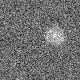 | 最小 |
-45.2205 |
最小 |
0 |
| 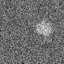 | 最小 |
-44.5884 |
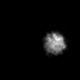 | 最小 |
0 |
最小 |
-696.555 |
最小 |
-0.000195313 |
| 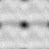 | 最小 |
1.23885 |
最小 |
0.262565 |
|
最小 |
1.45204 |
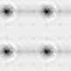 | 最小 |
0.696388 |
| 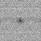 | 最小 |
1.71269 |
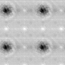 | 最小 |
1.12474 |
| 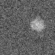 | 最小 |
-35.1267 |
 |
最小 |
0 |
| 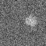 | 最小 |
-44.5884 |
最小 |
0 |
最小 |
-696.555 |
最小 |
-0.000195313 |
| 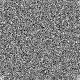 | 最小 |
-3.67017 |
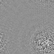 | 最小 |
-9.80742 |
| 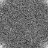 | 最小 |
-44.7368 |
最小 |
-6.01609 |
 |
最小 |
-0.0672328 |
最小 |
-1.78814e-08 |
最小 |
-826.059 |
最小 |
-135.653 |